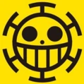

Piratas Heart
Os Piratas Heart (literalmente "Piratas do Coração") são uma novata tripulação infame e notável de piratas do North Blue e introduzidos no Arquipélago de Sabaody na época em que os Piratas do Chapéu de Palha chegaram lá há dois anos. O capitão deles, Trafalgar D. Water Law, é membro da Pior Geração e um ex-Shichibukai. Eles estão atualmente em uma aliança com os Piratas do Chapéu de Palha, Família Kozuki e Tribo Mink com o objetivo de derrubar Kaido dos Yonkou.
Jolly Roger

Como muitos piratas do North Blue os Piratas Heart não usam uma caveira com ossos cruzados, mas sim uma figura sorridente, a qual possivelmente simboliza a "Era dos Sonhos". Sua Jolly Roger se assemelha a dos Piratas Donquixote. O sorriso da Jolly Roger é provavelmente uma referência a Donquixote Rosinante, que queria ser lembrado sorrindo, em contraste com a maneira assassina de seu irmão Donquixote Doflamingo.
A tripulação é composta por 21 membros, todos, com exceção de dois, vestindo um traje de banho lilás claro com o Jolly Roger da tripulação estampado no lado esquerdo do peito, além do capitão e do Navegador. Quando Jean Bart se juntou à tripulação, ele apenas vestiu uma camisa preta depois de trocar as roupas de escravo, mas após o timeskipe, ele demonstrou ter adotado a mesma roupa que o resto da tripulação. Seu uniforme é notável por ser semelhante aos usados pelos escravos dos Nobres Mundiais que estavam trabalhando em Tequila Wolf, com as únicas diferenças notáveis sendo a cor e os Piratas Heart têm seu jolly roger em seus ternos. Eles também têm um único tripulante feminino. O anime mostra o número total de vinte e um, incluindo Law, mas alguns devem ser considerados não canônicos, como nunca foram vistos no mangá, especialmente porque um deles é Pandaman. Vários tripulantes sem nome fazem várias aparições, como aquela com uma máscara branca ou aquela com tranças; por outro lado, alguns fizeram apenas uma aparição em segundo plano.
Parece que Bepo, Shachi e Penguin são todos proficientes em artes marciais, nas quais todos parecem estilisticamente semelhantes. O capitão também é o médico a bordo.
Membros da Tripulação
| Piratas Heart | ||||
 |
||||
| Trafalgar D. Law | Bepo | Shachi | Penguin | Jean Bart |
 |
||||
| Ikakku | Uni | Clione | ??? | ??? |
| Aliados e Afiliação | ||||
 |
 |
 |
||
| Piratas do Chapéu de Palha | Piratas do Kid | Shichibukai | Família Kozuki | Aliança-Ninja-Pirata-Mink-Samurai |